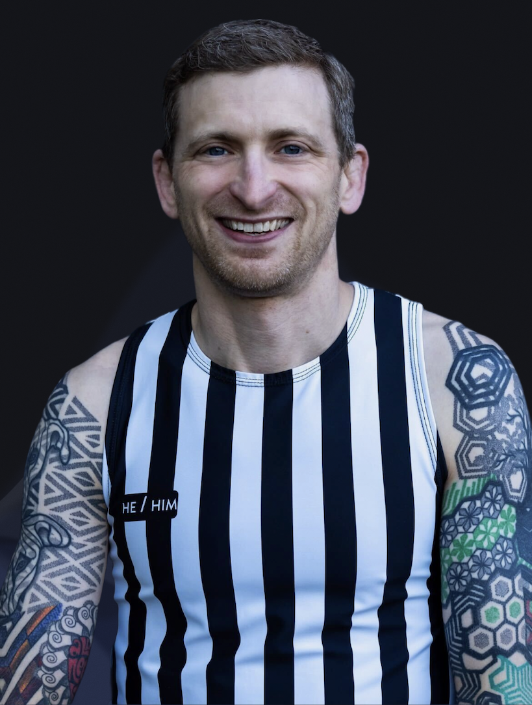
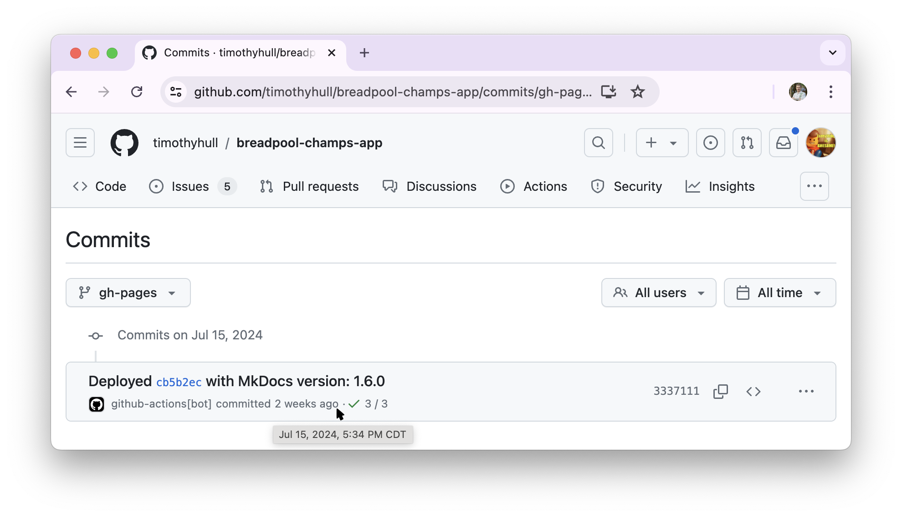
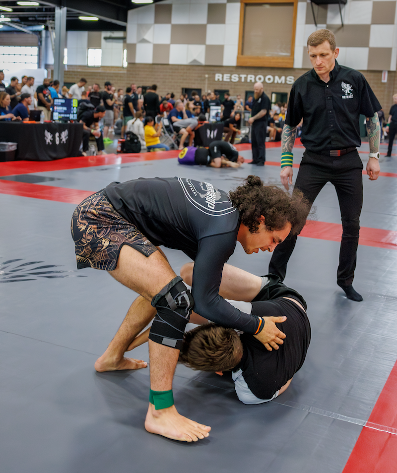
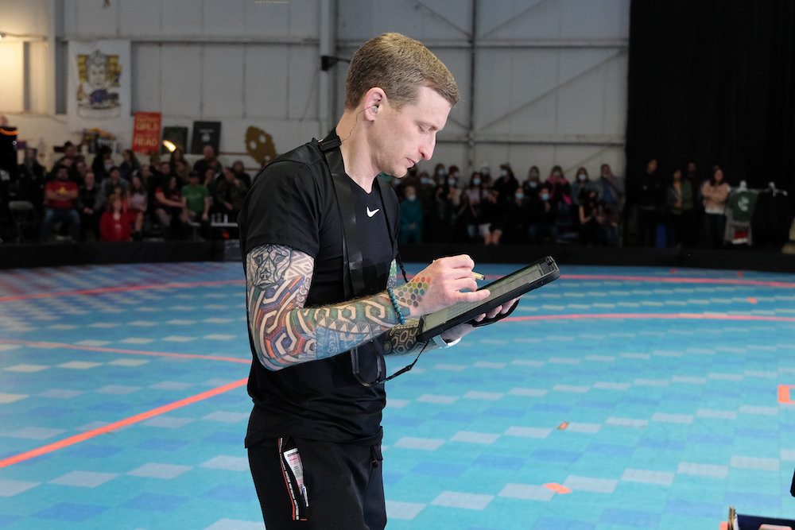
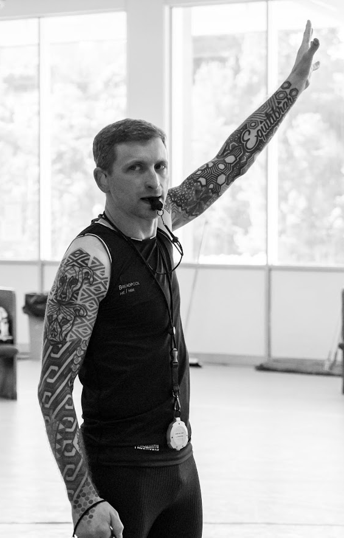

Breadpool's Evaluation¶

Credit: Mckay Grundstein-Helvey
{kind=link}
Anti-Cheating Statement
All changes to content on this site include date and time stamps to prove the application is unchanged after its submission. You may click here to review the complete build history for this site, and click here to review the complete source code history.(1)
-
Hover your mouse cursor over any "...ago" text to display a tooltip that reveals the change date and time stamp.

Click to enlarge image
{kind=link}
Navigation
The content of my application appears in several sections, various tabs, and expandable note boxes. Click or tap anywhere you see the icon to view each part of my application.
About Me¶
I'm Breadpool(1), TODO.
-
Derby Name Meaning
My derby name is a combination of two things:
- I love to bake breads and pastries
- My superpower is recovering from injuries and surgeries
This application describes the unique person I am and why I believe the WFTDA and the global roller derby community will benefit from choosing me to...
- Name: Breadpool (Timothy Hull)
- Pronouns: He/Him
- Age: 44
- Home Town: Portland, Oregon, USA
- Birth Town: Annapolis, Maryland, USA
- League Affiliation: RCR
- Languages: English, Brazilian Portuguese
- Occupation: Automation Software Development Consultant
- Fun Fact: BJJ Black Belt
TODO
I am newer to officiating roller derby, although I've been officiating various sports and competitive activities most of my life. I started officiating when I was sixteen, operating the scoreboard at high school basketball games, and I've since officiated:
- High school football.
- High school Army JROTC drill competition.
- U.S. Army recreational flag football.
- BJJ tournaments at the local, regional, and international levels.
I’ve been competing in sports throughout my life, including over 20 years of Brazilian Jiu-Jitsu competition. Officiating is one way I contribute to serving future generations of competitors while honoring the people who have officiated for my own competitive athletic experiences.
Although each sport has unique officiating requirements and nuances, I find there are many common elements to the role of officiating across sports. I make this point because I believe one of the reasons I've been able to integrate effectively with the roller derby officiating community within a few years is my prior officiating experience:
- Conducting myself in keeping with the professional nature of an official.
- Communicating effectively with players, coaches, other officials, staff, and spectators.
- Understanding that even the nicest people sometimes become elevated during competition, and affording them the space to be elevated without judging them or taking things personally.
- Deescalating intense situations between players, coaches, officials, etc.
- Not allowing player, coach, or crowd reactions to impact my judgment or responses.
- Observing and remembering the details of high-speed gameplay actions.
- Understanding the importance of allowing players to determine the outcome of contests.
- Remaining calm, composed, and effective during high-stakes competition.

Credit: Jason Tracy Photography
{kind=link}
I began my derby officiating journey in August of 2022, although somewhat by accident. My daughter was new to the roller derby community and wanted to spend more time on skates than was available to her in practices and scrimmages. She decided to start attending officiating practice and asked that I join her so she wouldn't feel alone.
I wanted to support my daughter and the roller derby community, and having skated and officiated in different capacities for the majority of my life, I felt comfortable giving roller derby officiating a shot. I had no idea that I would leave that practice feeling like officiating roller derby was the thing I was meant to do.
Since that day, I've poured my heart and soul into becoming a better official, believing I can serve people, many of whom live within social margins, in a way that allows them to live safer, more fulfilling lives.
Where I happen to live affords me access to more opportunities to officiate roller derby than many people have, and I have access to highly experienced officials to learn from. I do everything I can to use my privilege for good by officiating for leagues and teams that most need extra support. That means I frequently officiate roller derby:
- Outside of my home league, often in rural areas.
- For junior roller derby leagues and teams.
- For beginner-level teams, including those who play modified-contact games.
- For marginalized communities, teams, athletes, etc.
- Whether or not the gameplay is sanctioned or adheres to regulation play guidelines.
What I'm Applying For¶
TODO
How I Officiate¶
I believe the best officiating happens when a crew behaves like a selfless, supportive, and blameless team that focuses on being better today than they were yesterday. These are the qualities you can expect from me as a member of an officiating crew:
1. My Mindset
- I approach officiating just like I do playing any competitive sport, with the exception that my opponent isn't another person or team.
- In my mind, mistakes are the opponent I ferociously train to beat, while recognizing mistakes are a relentless opponent that will never allow me to be rest.
- I respect my opponent, although I do not fear them.
- I seek to challenge my opponent at the highest levels because I'm driven to "win," and I prepare to be successful in the biggest moments.
- "Winning" means my peers and I supported safe, fair gameplay in which the competing teams feel like they control the outcome.
- I give my all to be the best teammate anyone has ever had, always seeking self-improvement and working to be someone who my peers trust, feel safe with, and love to work with.
2. Extreme Positivity
- I show up with high enthusiasm, friendliness, excitement, and positivity to share with the officials I serve with, no matter how challenging game conditions might be.
- Regardless of the circumstances, I bring fist bumps, high-fives, and verbal "Let's go!" cues to support and encourage my peers throughout the duration of each contest in an event.
- I seek responsibility for my mistakes, make in-game adjustments, avoid dwelling on my mistakes so I keep my head in the game, and immediately extend apologies, where appropriate, to the people I impact with my mistakes.
- I have the backs of my on- and off-skates crewmates, always, and they can count on me to encourage them in difficult situations.
- When my officiating peers and leadership need me to make adjustments, I don’t dig my heels in about doing things a certain way, I give them my full support and do what they need me to do.
3. Strenuous Preparation
- I practice developing and improving officiating skills, on- and off-skates at least 4 hours per week, and often upwards of 10 hours per week.
- I actively seek feedback from other officials and relentlessly study game video to continuously learn and improve, and to position myself to best support safe and fair gameplay.
- I physically train and condition 5-12 hours per week to maintain a high level of fitness, improve my ability to be in the best position to observe game action, and ensure I will not experience physical fatigue no matter how strenuous the environmental or game conditions might be.
- I regularly study roller derby rules and cases to continuously develop a better understanding of roller derby rules theory because I believe learning to understand rules theory helps me quickly work through complex situations in a way that supports the best and safest possible gameplay experience.
4. Empathic Listening
- I actively listen to officials, players, and coaches with genuine effort and concern to understand their points of view.
- I seek to build trust by showing officials and teams they are heard and understood, even in cases where we may disagree with each other.
- I actively solicit feedback from my peer officials by telling them no feedback will hurt my feelings.
- For me, feedback is information I can use to be better today than I was yesterday, and I want to understand my mistakes, not ignore or hide from them.
5. Clear and Kind Communication
- I speak to everyone with courtesy and respect, no matter how I am spoken to.
- I do everything I can to actively communicate information with other officials in a way that promotes smooth, continuous game flow.
6. Keeping Athletes on the Track
- I believe gameplay is best when athletes are on the track, not in the penalty box, and I observe game action in a way that seeks to avoid issuing penalties whenever possible.
- For any action that might create sufficient game impact to warrant penalties, I describe the game impact to myself in a way I can recite during an official review before I issue any penalties (e.g., "Low block on yellow 2-4; caused purple 2-4 to go down").
- I maximize the use of verbal warnings, prescribed by gameplay rules, to help athletes avoid committing penalties.
- When I issue penalties, I include as much "3-star" information as possible to help athletes understand my basis for issuing penalties and help them avoid being assessed with the same penalty again (e.g., "Yellow 2-4, forearm; bracing on an opponent.").
7. Zone Ownership
- I focus on officiating specifically within the confines of my area/zone of responsibility.
- Said another way, I avoid immediately issuing penalties for actions I may not have the best point of view to observe.
- If I believe I may have observed game action outside of my zone that warrants a penalty or even warrants reversing a penalty, I seek to discuss my observations with other officials during lineups to collaborate on our points of view and reach the best possible outcome.
8. Hustle
- No matter what I do, I move with the utmost sense of purpose, often sprinting back and forth, to show everyone around me that my concern for serving the teams and peers I officiate with is equivalent to that of the highest-level competitors.
- I apply the skills I've developed in over 20 years of Jiu-Jitsu and Judo training and competition to reduce the probability that I will fall and to recover from a fall with precision and explosiveness.
- If I end up on the ground, I maintain eye contact with my zone of coverage to the extent possible, and return to my assigned responsibilities immediately, even if I am in discomfort from whatever took me down.
9. Versatility
- Although this application is specific to SO roles, I work hard to continuously build skill and experience at each officiating position, on- and off-skates because I believe learning and practicing each role helps me be a better official and teammate for my SO and NSO peers.
- I actively work to keep my OHD balanced between SO and NSO roles, officiating ≈2/3 of games in SO roles and ≈1/3 of games in NSO roles.
- Whenever needed, I am comfortable serving in any SO or NSO role, with or without advanced notice. (1)
-
NSO Role Caveat
Although I practice working with CRG extensively, including IGRF and statsbook preparation, I do not have game experience in the role of HNSO.
10. Courage To Do What's Right
- Making split-second, difficult decisions is simply part of being an official, and I believe that applies to all levels in all sports.
- Of course, there are no prescriptive guidelines for what the "right" thing to do is, although my peers can count on me to use good judgment, be decisive in key moments, and own responsibility for the decisions I make, whatever the outcome.
What This Means To Me¶
TODO
Conclusion¶
I believe the unique circumstances of my life prepared me for this opportunity. The intersection of my circumstances, choices, experiences, successes, failures, dreams, and my life's purpose combined to make this the one thing I've wanted so badly that I've poured my entire life into having the chance.
Thank you for the opportunity to apply and for considering my application. If you select me to be a member of an officiating crew, I will reward your decision with the dedication, preparation, and performance of a champion.

Credit: Steven L. Price (Skippy Steve)
{kind=link}
My Application By The Numbers
- 44K - miles flown to officiate in the previous year.
- 229 - games officiated in the previous two years.
- 134 - games officiated in the previous year.
- 100+ - hours at a PT's office since 9/19/2023 to be ready to submit this application.
- 60+ - hours I spent preparing this application.
- 18 - events officiated in the previous year.
- 16 - out-of-state trips to officiate derby in the previous year.
- 0 - regrets for all of my work and sacrifice to be ready for this moment.

Credit: Mckay Grundstein-Helvey
{kind=link}